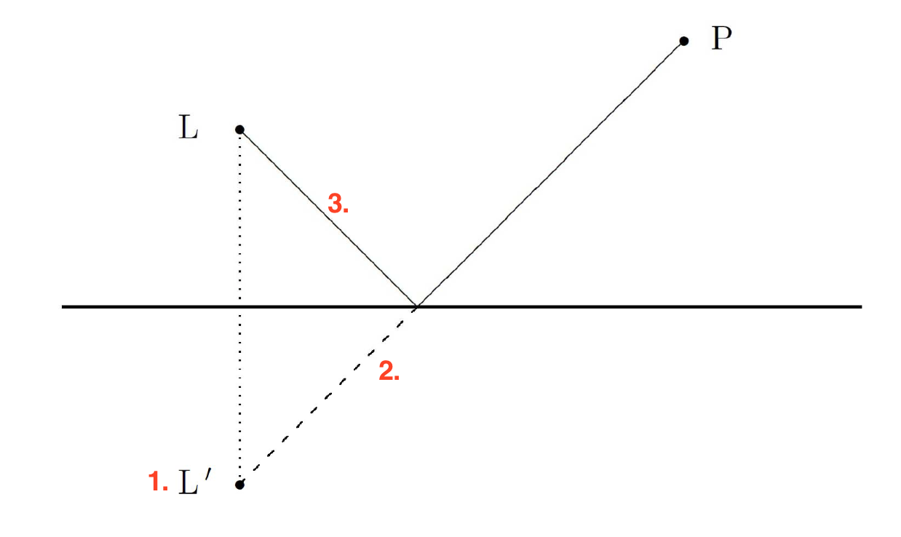

| Topic | Formula Name | Book Page | Formula | Example |
|---|---|---|---|---|
| Optik | Snell's law / Brechungsgesetz | Gesetz: S365 Brechzahlen: T35 |
$$\frac { sin(\alpha ) }{ sin(\beta ) } =\frac { Lichtgesch.\quad M1 }{ Lichtgesch.\quad M2 } =\frac { Brechzahl2 }{ Brechzahl1 } $$ | $${ =\quad n }_{ air }*sin(35°)={ n }_{ water }*sin(\theta )\\ =\quad \frac { 1.00029*sin(35°) }{ 1.33 } =\frac { 1.33*sin(\theta ) }{ 1.33 } \\ =\quad \frac { 1.00029*sin(35°) }{ 1.33 } =\quad sin(\theta )\\ =\quad arcsin(0.4314)\quad =\quad \theta $$ |
| Optik | Energie eines Photons | S537 | $${ E }_{ Photon }={ h }_{ Planck-Konst. }*{ f }_{ Freq. }$$ | $$6.626*{ 10 }^{ -34 }Js*4.5*{ 10 }^{ 14 }Hz\\ =\quad 2.9817*{ 10 }^{ -19 }J$$ |
| Optik | Planksches Wirkungsquantum | S537 | $$6.626*{ 10 }^{ -34 }J*s$$ | $$ $$ |
| Optik | Anzahl Photonen | S537 | $$\frac { Intensität(w)*Zeit(s) }{ { h }_{ Planck }(Js)*Freq.(Hz) } $$ | $$\frac { 2*{ 10 }^{ -4 }W\quad *\quad 1s }{ 6.6*{ 10 }^{ -34 }Js*4.5*{ 10 }^{ 14 }Hz } \quad =\quad 6.7*{ 10 }^{ 14 }$$ |
| Optik | Reflexionsgesetz | s361 | $$Einfallswinkel=Reflexionswinkel\\ \alpha =\beta $$ |  |
| Optik | Lichtweg konstruieren | s361 | 1. Startpunkt spiegeln 2. Gespiegelter Startpunkt mit Endpunkt verbinden 3. Profit. |
 |
| Optik | Öffnungsverhältnis | Folie 57 W10 | $$Öffnungsverhältnis=\frac { Durchmesser }{ Abstand\quad zu\quad Fokus } $$ | |
| Optik | Abbildungsgleichung | Folie 64 W10 | $$\frac { Bild\quad B }{ Gegenstand\quad G } =\frac { Bildweite\quad b }{ Gegenstandweite\quad g } \\ \frac { B }{ G } =\frac { Bildweite-Fokusabstand\quad f }{ Fokusabstand } \\ \frac { Bildweite }{ Gegenstandweite } =\frac { Bildweite-Fokusabstand }{ Fokusabstand } \\ \frac { 1 }{ g\quad } +\frac { 1 }{ b } =\frac { 1 }{ f } \quad \quad \frac { B }{ G } =\frac { b }{ g } $$ |  Achtung gibt separate Liste für dünne Linsen F77W10. |
| Optik | Abbildungsgleichung für dünne Linsen (Konzept bei dem die Dicke einer Linse vernachlässigt wird.) |
Folie 72 W10 | $$\frac { 1 }{ g } +\frac { 1 }{ b } =\frac { 1 }{ f } \\ \frac { B }{ G } =\frac { b }{ g } $$ B = Bild G = Gegenstand b=Bildweite g=Gegenstandweite f = Fokusabstand |
 |
| Optik | Linsentypen | Folie 60 W10 | ||
| Optik | Abbildungsmasstab | Folie 83 W10 | $$\beta =\frac { Bild }{ Gegenstand }$$ | Example |
| Optik | Brechkraft | Folie 83 W10 | $$D=\frac { 1 }{ Fokusabstand\quad f } \\ [D]=\frac { 1 }{ m } =1dpt\quad (Dioptrie)$$ | Example |
| Optik | Linsenschleifer- gleichung |
Folie 83 W10 | $$D=(\frac { { n }_{ 2 } }{ { n }_{ 1 } } -1)*(\frac { 1 }{ { r }_{ 1 } } +\frac { 1 }{ { r }_{ 2 } } )\\ { n }_{ 2 }=Linsenmaterial\\ { n }_{ 1 }=Umgebung$$ | Example |
| Topic | FormulaName | BookPage | Formula | Example |